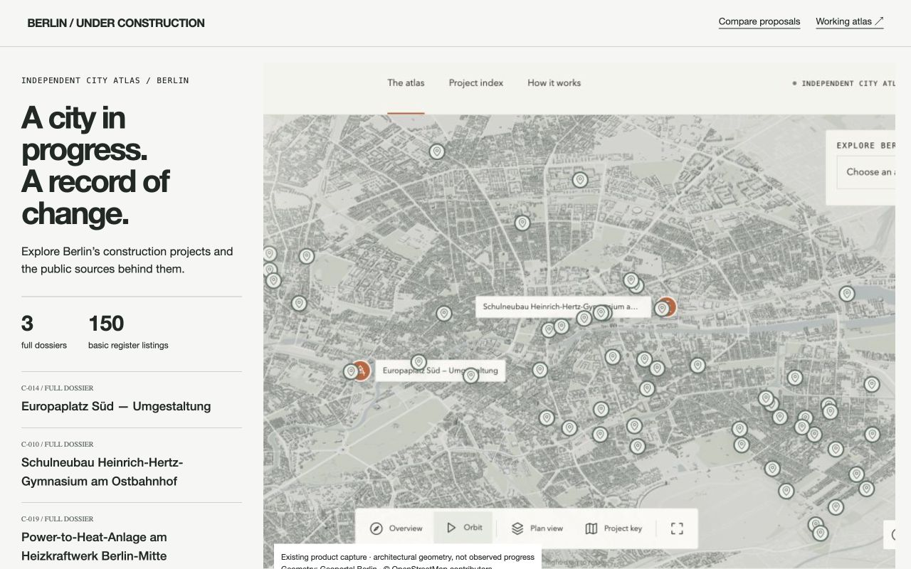

01 / recommended
City Desk
Compact evidence rail. Strong sans-serif type. Map as the main working surface.
View full proposal ↗
Personal design / 21 September 2026
One existing product, three distinct compositions. Same records. Different emphasis.
The live city model stays central. A compact reading panel explains the product, while the redesigned index gets you straight to a dossier. Implemented locally; production is unchanged.
Open the finished local atlas ↗ Explore the redesigned indexProposals use a real capture of the existing atlas; they are composition studies, not three rebuilt map engines. Research, brand rationale and verification are linked in INDEX.md.